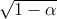
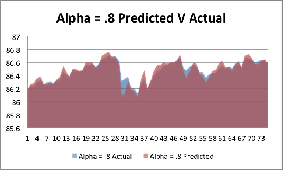
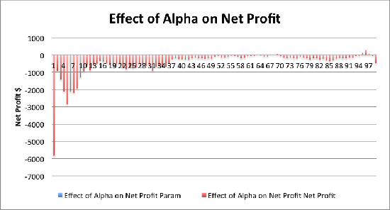
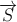
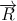
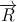
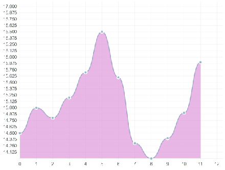
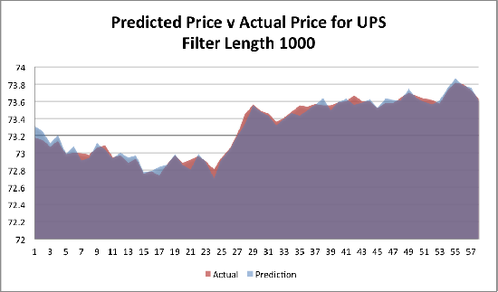
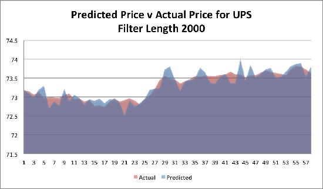

Mathematical concepts in systems science and electrical engineering are applied to quantitative finance. Topics explored include moving averages, Wiener Filtering, Kalman Filtering, and linear prediction. Algorithms making use of these topics are devised for the purpose of creating an automated trading strategy to maximize net profit. Trading simulations are executed in the Python programming language.
In 2009, it was estimated that firms that employed quantitative trading strategies, which represented 2% of the number of trading firms operating in US markets, accounted for around 70% of all equity trading volume [WallStreetAndTech]. Although this number has since decreased, it demonstrates the extraordinary growth in quantitative finance that was experienced in the last decade.
Such fast paced growth was facilitated by major advancements in communications systems that took place during the same time period. Computers have vastly decreased communication times and eliminated much of the simple arbitrage that existed since the inception of the capital markets. Firms seeking to take advantage of price discrepancies were forced to turn to advanced computational methods to do so.
Many orders placed by these firms are executed with pre-programmed electronic instructions that are designed by mathematically inclined traders. The content of these instructions is a highly guarded secret within each firm, and it’s often the case that an algorithm has a limited lifetime where it is able to take advantage of discovered arbitrage opportunities before the markets adjust or other firms develop similar strategies and the opportunity is minimized [AlgorithmicTrading].
This project is concerned with how topics in systems science and electrical engineering may be applied to this industry. Many topics such as control theory, signal processing and optimization are relevant to high frequency trading. Engineers who study systems science often seek to discover the signal through the noise or optimize a constrained mathematical model. Similarly, traders seek to optimize their portfolios and discover arbitrage opportunities.
Analyze the effectiveness of various systems science and electrical engineering prediction methods in tracking the price of financial instruments in the stock market.
In this paper, we explore the following systems science and electrical engineering topics:
1. Double Moving Average
The double moving average algorithm is a widely known, simple example of an algorithmic trading strategy. It works by trading an equity when its short and long moving averages cross, thereby indicating momentum.
2. Wiener Filter
The Wiener filter is an algorithm that seeks to filter out noise in order to estimate the true underlying signal. The method assumes the signal is a linear stochastic process with known autocorrelation and seeks to minimize the error between the actual signal and its measurements.
3. The Kalman Filter
The Kalman Filter is a recursive algorithm that uses measurements observed over time to predict the value of future measurements. It has been proven to be an effective estimator for many real world applications. However, the Kalman Filter requires a mathematical model for the system it tracks. In this project we implement a simplified version of the Kalman Filter called the Alpha-Beta-Gamma Filter, which does not require a rigorous mathematical model.
4. Linear Prediction Model
The linear prediction model created for this project uses a user-specified number of previous prices to predict one future price. The model must be trained on historical data to be applied in a real time trading strategy.
For this project, we constructed a trading simulation in Python, a highly versatile dynamically typed programming language. We define a Trade Algorithm as the highest level object in the simulation. Each Trade Algorithm is initialized with an estimator type, price history for a single financial instrument and an empty Portfolio Object with $100,000 of starting capital. Then the simulation is run on the given price history, as if it were trading in real time.
List of Trading Simulation Data Structures
Top level controller for the trading simulation, executes the trading strategy.
Maintains current available capital and a list of assets.
An object unique to each financial instrument that maintains how many units are owned in the Portfolio.
A small data structure to facilitate transactions.
Summarized Simulation Procedure
A moving average is an average taken over a finite window that is updated as new observations are made. Each new observation “pushes” the oldest observation out of the average so that at any given time, the moving average is calculated with a predetermined number of observations. In finance, a plot of the moving average over time can reveal insight about the long term movements of the price of a financial instrument, as opposed to the small random fluctuations observed on a step-by-step basis. Moving averages have been used to analyze financial instruments for quite some time, with a common method being the double moving average.
For a double moving average algorithm, two averages are calculated using windows of different sizes: short and long. When used to track financial instruments, the difference between the two moving averages can indicate general trends in the price. For example, when the short moving average crosses and exceeds the long moving average, this indicates upward momentum; the opposite is true when the long moving average exceeds the short. A simple trading strategy can be devised that buys and sells when these averages cross one another. [Double]
The concepts used in this algorithm may be basic, but they have proven to be successful and are popular in quantitative finance. Although it is not a topic practically seen in systems science or electrical engineering, this algorithm is still worth exploring and is used in this project as a point of comparison.
Implementing the moving average is extremely simple. The algorithm has inputs of long and short windows (Wl and Ws ]), and it continually calculates each moving average as time progresses. Since a trade decision is only made if the moving averages cross, only the averages from the previous step need to be stored in memory. The program calculates the difference between the averages (Wl -Ws ), and if the previous difference was positive and the current is negative, a buy will be ordered. A sell will be ordered under the opposite conditions; nothing occurs under consistent conditions.
Equity price history
1 year at 10 minute resolution. ~9000 data points per equity
Ford (F), Apple (AAPL), Accenture (ACN), Caterpillar (CAT), Macy’s (M), United Parcel Service (UPS), Priceline (PCLN), Campbell Soup Company (CPB)
$100,000 (Ci)
50, 200 steps
25, 100 steps
Many window sizes were initially explored, but the (Wl, Ws) combinations of (25, 50) and (100, 200) consistently showed the most promising results.
Net profit is calculated by taking the value of all cash and equity holdings (A) and subtracting the starting capital ($100,000).
The following graphs are comparisons between the net profit achieved by running the Double Moving Averages algorithm on the two different window sets, (25, 50) and (100, 200).
Graph of Net Profit where (Wl, Ws) = (25, 50)
The only notable success came from AAPL, which gave a return of $245.38. CAT also had a small gain of $15.99. The other stocks all lost a small amount, the most being PCLN at $25.33. Total returns on each of these stocks were $208.81, mostly due to the success from AAPL.
Graph of Total Net Returns where (Wl, Ws) = (100, 200)
Again, AAPL performed well, but not the same performance seen previously as returns shrank to $104.95. CAT also had a smaller gain of $8.51. The other stocks again lost a small amount, except PCLN now lost $98.31. Total returns on each of these stocks were -$20.12; AAPL and PCLN offset each other and the slight losses from the others added up.
Choosing the length of each window is critical to the outcome of each simulation. In addition to the shown simulations of (25, 50) and (100, 200), simulations were done with windows at shorter and longer ranges as well as at different proportions. At a glance, these two achieved the best results, and coincidentally both have a short to long window ratio of 1 : 2. Windows set to a very short distance performed very poorly, while very long lengths were only slightly worse than the ones used.
The Double Moving Average algorithm shows some promising signs, but at its fundamental implementation, it is not something that can consistently make for a good strategy. However, a more thorough implementation could show dramatic improvements. Using windows of very short length make the calculations change much more quickly, which causes the algorithm to make more aggressive, sometimes stupid decisions. A very long window can make it slow to react to important changes. Windows of medium length showed the best results.
A Wiener Filter is a type of filter that seeks to filter out noise and give an estimation of the true underlying signal. It is commonly used in audio and image processing to remove the noise from a signal or image, respectively. It was developed in the 1940s by Norbert Wiener and published in 1949, but Andrey Kolmogorov also provided significant additions towards its development. Its success gave rise to many other filters, including the Kaman Filter.[Wiener]
The Wiener Filter was initially developed for use in continuous time and a non causal case, meaning both past and future data needed to be accessible. Some variations of the Wiener filter that make it more valuable are the continuous time causal solution as well as the discrete time causal solution, otherwise known as the finite impulse response (FIR) Wiener Filter. This variation takes in a finite amount of past and present data and can be used to either determine the underlying signal or to make a prediction of the next value. The FIR Wiener Filter assumes that the signal is a linear stochastic process with known autocorrelation and it seeks to minimize the error between the actual signal and its prediction. This error minimization technique makes it very similar to a least squares method.[Fargues, Shimkin, Wunsch, Tcheslavski]
For this experiment, an FIR Wiener Filter will be used to predict the future states of financial instruments. The equation below shows how a prediction will be made at each successive state:
The prediction for the next state is calculated by taking the sum of the product of an ideal weight, ωk, and the kth previous value from the present state. This means that the Wiener Filter has a variable filter length that determines the amount of previous data to consider in calculations. Each ω represents the weighted value that minimized the error in prediction of previous states. Let W be the array that contains each ω going back k values from the current state such that ωk represents the ideal weight for the current state. W can then be calculated as follows:
Where Rx is a k x k Hermitian Toeplitz matix of autocorrelations and rdx is a vector of cross-correlations. Each ω within W is the ideal weight for its respective state in time. The equation below shows that ωk is the value of the weight that produces the smallest value of the squared difference between the prediction and true value.[Wunsch]
The Wiener Filter is implemented in Python and uses the Numpy library. Instead of using the Hermitian Toeplitz matix of autocorrelations and vector of cross-correlations to calculate the ideal value for each ω, an two alternative implementations were devised. These methods were developed solely for a simpler implementation and they still seek to minimize error from predictions in previous states. The program finds the optimal value for ωk that minimizes the prediction error for state t - k + 1 for k = 1 → k. Both of the final prediction calculations use array W, which consists of different valued weights ωk.
Running a prediction with a step size of n at time t will only use points within the range of t - n for generating the values of each ω. This causes the initial summation calculations to use fewer values than the later ones as the step window is strictly defined. As each ωk is calculated, it is continually used in calculating all consecutive values of ω. The program then adjusts the values of a value w and determines which value will continually keep error at a minimum.
In this variation, each ω calculation always uses n points of previous data for calculating the optimal weight. For the previous k states leading up to t, the program incrementally increases the value of an arbitrary variable w multiplied by the j = k previous states. When calculating what these values should be, the same objective function is used, but it uses a fixed weight w across each previous state. For each state of k, w is incrementally increased and the value that produces the least squared error is then assigned to be that respective ωk. This is shown in the equations below:
Both implementations were given a desired level of precision for calculating the desired values of ω, but a heuristic was written to significantly reduce the number of iterations needed.
Equity price history
1 year at 10 minute resolution. ~9000 data points per equity
Ford (F), Apple (AAPL), Accenture (ACN), Caterpillar (CAT), Macy’s (M), United Parcel Service (UPS), Priceline (PCLN), Campbell Soup Company (CPB)
$100,000 (Ci)
10 and 40
Testing performance of both strict and relaxed step length
Net profit is calculated by taking the value of all cash and equity holdings (A) and subtracting the starting capital ($100,000).
The following is a comparison of the net profits achieved from both variations of the Wiener Filter with against nine equities at 2 different step sizes.
Graph of Net Profit where n = 10
The strict step size (blue) did not achieve any profits, but aside from PCLN, it also did not have any huge losses. The relaxed step size (red) was able to achieve a small profit on CAT, but it had huge losses on AAPL, ACN, PCLN, and CPB.
Graph of Net Profit where n = 40
The strict step size (blue) was able to achieve a considerable profit of $10,698.05 on AAPL, but returned a loss of $13,936.80 on PCLN. All other stocks had small losses of a few hundred dollars. The relaxed step size (red) had similar results, but again at a much larger scale. Gains from AAPL were a surprising $27,933.73, while PCLN managed to lose $23,454.91. The other stocks again had less considerable losses, but now were amplified by an order of magnitude.
The ultimate success of this algorithm can be measured by how accurately the filter is able to predict future price movements. This can be affected by the differences between the relaxed and strict step requirements as well as the number of steps used. In this section, a small section of data from the simulation of UPS will be analyzed to understand how accurately the Wiener Filter can predict the next price.
Simulation Results with n = 10
In the graph above, it is very clear that the short, strict step size is able to model the stock price to a high level of accuracy. For the majority of this segment, the prediction is almost exactly equivalent to the actual outcome. There were a few cases when the Wiener Filter overestimates a movement. The blue spikes indicate a time when it predicted a much higher result while the red trench indicates a point when the prediction was much lower than reality. However, there are very few cases when the price moves in the opposite direction of the prediction.
Simulation Results with n = 40
The graph above shows that with a longer step size, the strict step implementation still produces incredible results. Predictions consistently follow the slight fluctuations of the actual price, and only twice in this segment did it overestimate a movement.
Simulation Results with n = 10
In the relaxed implementation with a short step size, it is clear that it does not have the same level of performance as the strict implementation. In addition to inaccurately predicting large movements as seen by the two spikes, it was also consistently slightly above of below the actual price. This data shows that it is slow to pick up on price changes and struggles to have a prediction match the true value, yet alone the direction it will move.
Simulation Results with n = 40
With a larger step size, the results are completely unreliable. The longer step size makes it overcompensate for any slight movement, causing the predicted value to violently shift around. The large blue mountain and red valley represent a predicted increase and decrease that never occurred. This data shows that with a larger step, the relaxed Wiener Filter has much more volatile, inaccurate predictions.
After comparing the figures that showed the predicted versus actual result, it is clear that the strict step size implementation does a much better job at predicting the price movements and future values. Occasionally it predicts the price will move in a more drastic way, but rarely does it predict a movement in the opposite direction. Looking at the entire simulation, the short, strict simulation had 95.6% accuracy and an RMS error of 7.9%. The short, relaxed simulation had an accuracy of 58.0% and an RMS error of 19.8%. Results from the longer step size are roughly the same, except for the long, relaxed RMS error which tops out at 1146.7%!
In the analysis of the relaxed step size implementation, it is obvious that the shorter step gave a more accurate result. The longer step size made the algorithm predict large movements, and it did not provide much value. In the case of the strict step size implementation, the step size did not seem to make too much of a difference. Both simulations produced very accurate results, and each managed to occasionally over predict a movement.
After running simulations and looking at the data, the results of the strict implementation looked too good to be true. It manages to very accurately predict price movements and one would expect to see larger variations from such a simple implementation. The first concern was to verify that the algorithm was in no way gaining access to future information at each prediction, which was confirmed. This implementation was reviewed, debugged, and no mistakes were found. However, that is not to say that this method is ready to be used in accurately predicting all market movements. Extensive testing needs to be done to verify if these finds are true or if there is an unfound mistake in the model.
Despite giving a prediction accuracy of 95%, all simulations of the strict, short implementation lost money, while only AAPL had a positive return in the strict, long simulation. Given that the ability to predict the price movement was so accurate, yet no profits were seen indicates that the primitive trading strategy is inadequate. This trading strategy was simply “buy if it will go up, sell if it is going to decrease”. A trading strategy that uses these predictions and has a better understanding of when to place an order could be wildly successful.
The Kalman Filter is a recursive algorithm that uses system measurements observed over time to predict the value of future measurements. Each measurement is assumed to contain noise created by a random variable in the process measurement. The algorithm has been shown to accurately estimate the true value of such a process by minimizing the error introduced by the random variables [Alpha Beta Filter].
In 1960 Rudolph E. Kalman published a widely read paper about the application of this algorithm in discrete time sequences. Engineers in many fields adopted the algorithm, especially in topics such as navigation and tracking [Brown and Hwang]. In this paper, we are looking to apply the Kalman Filter algorithm in the context of tracking the price of a given security in the stock market.
With this goal in mind, we are presented with a unique challenge, namely that the Kalman Filter algorithm requires a mathematical system model. When used in applications such as navigation or tracking objects in space, kinematic system models can be experimentally designed since the system measurements are governed by the laws of physics. In our case, there is no known mathematical model of capital markets.
As such, we have chosen to instead use a simplified version of the Kalman Filter called the Alpha-Beta-Gamma Filter, which can be applied without the need for a rigorous mathematical model. This algorithm is very similar to the Kalman Filter algorithm in theory. The Alpha-Beta-Gamma Filter uses discrete time system measurements predict the value of future measurements. However, is assumes a linear model, and can thus abstract the need for a more in depth one.
This filter has been shown to predict simple linear kinematic systems precisely, and is categorized as a form of the State Observer in modern control theory. It works by recursively incorporating the previous state measurement to produce a future estimate. After each prediction and post-measurement, there is an update step wherein the algorithm adjusts for the error between what it predicted and what the actual next measurement was [Alpha Beta Filter].
Furthermore, the Alpha-Beta-Gamma Filter is named after the three greek letters which represent algorithm parameters that determine how sensitive the algorithm is to large variations between measurements. α is chosen by the user, then β and γ are calculated from its value using the following equations:
Chosen by the user, determines the sensitivity of the algorithm to error.
2(2 - α) - 4
β2∕(2α)
See below for a detailed breakdown of the Alpha-Beta-Gamma Filter equations.
In this project, we use the Alpha-Beta-Gamma Filter to predict the price of a given security at time t + 1 during a trading simulation. The algorithm works by adapting the price history into a linear model with position, velocity and acceleration: X, V, and A, respectively. These parameters are updated with each iteration and weighted with the α, β, and γ factors to give an estimation of the price for the next time step.
We implemented an Alpha-Beta-Gamma Filter in Python using the Numpy open source library. Numpy is a robust, highly versatile and widely used package for the Python programming language that has functions for manipulating matrices and performing mathematical calculations.
The following are the recursive equations that define the recursive algorithm.
Prediction Equations
Update Equations
In these equations, we can see that a higher alpha value increases the responsiveness of the system to residual error. This implies the system is more sensitive to prediction error, and a higher α value should correspond with a more reactive system.
Equity price history
1 year at 10 minute resolution. ~9000 data points per equity
Ford (F), Apple (AAPL), Accenture (ACN), Caterpillar (CAT), Macy’s (M), United Parcel Service (UPS), Priceline (PCLN), Campbell Soup Company (CPB)
$100,000 (Ci)
Range of [0 to 1]
Applying the Alpha-Beta-Gamma Filter as an estimator in the trading simulation gives mixed results. In some cases the prediction was good enough to ultimately lead to profit, but many other times it led to a net loss.
Net profit is calculated by taking the value of all cash and equity holdings (A) and subtracting the starting capital ($100,000).
The following is a comparison between the net profit achieved by applying the Alpha-Beta-Gamma Filter with two different α values to 8 different securities.
Graph of Net Profit where α = 0.8
In this simulation, the alpha value was set to 0.8, meaning the filter was more sensitive to prediction error. The result was an average net profit of $ 913.42, but the trade simulations for Apple and Priceline yielded significant outliers. Removing these two data points gives an average return of $ -367.43. Therefore, we conclude that the αβγ Filter with an α of 0.8 is not an effective estimator for this dataset.
Graph of Total Net Returns where α = 0.2
In this case the α value was set to 0.2, meaning the filter was less sensitive to prediction error. This simulation yielded an average net profit of $ -180.22. After removing Apple and Priceline, our two outliers, the average profit is calculated to be $ -480.29. Therefore an α = 0.2 is less optimal compared to α = 0.8 for the trading simulation.
Conclusions
Albeit this is a small sample size, the trading simulations above demonstrate that neither 0.8 or 0.2 generate positive net profit consistently. Although is possible that there is a more optimal α value between 0 and 1, these results indicate that it is unlikely an optimal α value exists that will generate profit consistently. The next section will explore the effect of α on the trading simulation in more depth.
The success of this algorithm for all practical purposes can be measured by how well the algorithm predicts price movements. The α value will affect how sensitive the filter is to prediction error. Thus, with a higher α value, we should expect that the filter may track more quickly, at the expense of potentially overshooting the actual values. Conversely, a smaller α should give smoother predictions at the expense of being sensitive to rapid changes.
The following is a comparison of a small section of the simulation between the predicted price vs. actual price with two different α values on the UPS instrument.
Simulation Results with α = 0.8

RMS-Error is found to be 0.1127
Simulation predicted the direction of price fluctuations 85.23% of the time
From the above graph, we can see that the filter closely follows the actual values except for a few significant outliers. The effects of a high α in this case can be seen in how the jaggedness of the red area line. Each time a prediction is significantly different from the actual value, the next prediction makes a large correction.
Interestingly, the simulation with this α value predicted the correct direction of the price change (positive or negative) 85% of the time. With such a high success rate, we conclude that even a small number of failed predictions can lead to significant losses.
Simulation Results with α = 0.2

RMS-Error is found to be 0.1948
Simulation predicted the direction of price fluctuations 63.61% of the time
In this simulation with a low α, the predictions lag behind the actual values. This demonstrates what we expect about α, namely that the low value corresponds with a smoother prediction curve that is less sensitive to changes in the system. Accordingly, we see the red prediction line change once the blue actual line has made a significant change.
Not surprisingly, the lower α value produces a higher root mean square error in the predictions and predicts correctly about 22% of the time.
The choice of α can significantly alter the predictions in the trading simulation. This is because the α value determines how sensitive the algorithm update equations are to the error produced at each time step (see Alpha-Beta-Gamma Filter Equations). The figure below shows α’s effect on net profit for the UPS instrument.

Discovered an optimal α = 0.96
Realized gain is $ 281.95
Predicted the direction of price fluctuations 77.41% of the time
These results show that very low α values create poor estimators in the trading simulation, but, α values of 0.95, 0.96 and 0.97 produce positive net profit. This makes sense because the price of a financial instrument is highly volatile. When a low α is used the estimator is less sensitive and fails to respond quickly to price changes. In contrast, a high α value allows the estimator to track the price more closely. Unfortunately, an α of 1 doesn’t perfectly predict the future instrument prices because in many cases the estimator responds too quickly and too aggressively for an accurate prediction.
Theoretically, this filter is designed to estimate a simple system by modeling position, velocity and acceleration. Empirically, these properties are not inherent to the capital markets, and thus the algorithm struggles to accurately predict price movements.
The Alpha-Beta-Gamma Filter is generally not a very effective estimator for capital market prices. However, in some trading simulations the filter estimation led to net positive profit. We conclude that this can be achieved by a combination of an optimal choice for α and some amount of luck / coincidence.
Linear Prediction is a form of estimation used in linear discrete time systems. Linear prediction models are used in a wide number of applications including predicting the behavior of neural networks in biomedical engineering and digital signal processing in systems engineering. On a high level, this model uses n data points to predict the n + 1 ’th point.
The prediction model can be represented in matrix form as
“Stimulus” m x n matrix
“Response” m x 1 vector
n x 1 Prediction Vector
This is only notationally different from the standard matrix equation Ax = b, which is used commonly in linear algebra. In the linear prediction model, S is referred to as the “stimulant” and R as the “response.” Right side matrix multiplication of S by k gives the vector R. Accordingly, multiplication of any individual row of S, denoted as  , by k gives the corresponding row in R, denoted as  .
To create a prediction model in this form, we build S and R by taking stimulants and responses from a dataset. In this paper we build this model using the price history of a stock. Each row is constructed by collecting n data points. Each successive row gathers n points shifting forward by a predetermined step length. Each row  is constructed by collecting the 1st data point following the n points collected for [Krishnan]
Mathematically where step length = s:

Once we have computed S and R, then finding k is a simple matrix operation. It is possible to use the formula k = S-1R to find k, but we use a more accurate method, which minimizes the error introduced in the calculation. Skipping the derivation of this formula, the equation is as follows:
Then, k can be applied to any n x 1 vector of consecutive data points to compute the corresponding response. In practice, the linear model is constructed based on known training data. Then, it is applied to observed data to predict future measurements. See the “Design” section to see how the filter is applied in this paper.
The design of the linear prediction model for our trading algorithm can be best understood by examining the example below (see sub-section .1).
Implementing the linear prediction model for our trading algorithm required a few design choices. First, we chose our step length to be 1. Generally, unless computation time is a serious problem, linear prediction models should use the smallest possible increment in order to maximize the accuracy of the estimator, k.
Second, we had to choose what our filter length would be. This is the number of data points selected to predict the following single point. For comparison, we chose two lengths: 1000 and 2000. A longer filter length generally corresponds with a longer computation time, but more accurate predictions.
Lastly, we chose to build the linear prediction model from the first half of the data and trade on the second half. This way, we can most closely simulate a real trading strategy.
Take the following price history for a stock F:
Data: [14.5, 15, 14.8, 15.2, 15.7, 16.5, 15.6, 14.3, 14.0, 14.4, 14.9, 15.9]
Graph:

Take n = 3 and the step length = 1.
S is constructed as follows:
The first row is the first three elements of Data; the second row is the following three elements of Data; etc...
R is constructed as follows:
The first element in R is the fourth element of Data; the second element of R is the fifth element of Data; etc...
We know S and R, and we seek to solve for the value of k.
Then, we can confirm that if we multiply any row of S by k, we will get the corresponding value in R.

Equity price history
1 year at 10 minute resolution. ~9000 data points per equity
Ford (F), Apple (AAPL), Accenture (ACN), Caterpillar (CAT), Macy’s (M), United Parcel Service (UPS), Priceline (PCLN), Campbell Soup Company (CPB)
$100,000 (Ci)
1000 and 2000
1 time step
Net profit is calculated by taking the value of all cash and equity holdings (A) and subtracting the starting capital ($100,000).
Simulation Results with filter length 1000
This simulation yielded an average net profit of $ -1724.28, but the results from Apple and Priceline significantly affected the average. When these two outliers are removed, as they are done for the alpha-beta-gamma filter, the average becomes $ 1.23. This result indicates that the linear prediction model is a decent estimator for the trading simulation. Of course, a larger sample size would offer stronger results, but with the resources at hand, this result is positive.
Simulation Results with filter length 2000
This simulation with a filter length of 2000 yielded an average net profit of $ -1122.52, but similar to the first simulation Apple and Price are outliers. Removing these shows an average profit of $ -55.70. This result is slightly more negative than the filter length of 1000, but still promising.
As for the other algorithms in this paper, the success of any of our estimations can be measured by how well it predicts price movements. The more it does it correctly, the more net profit we gain during a simulation. Based on the theory of the linear prediction model, we expect that a longer filter length leads to more accurate predictions and more net profit.
What follows is a 60 point comparison between the predicted price vs. actual price with two different filter lengths. For the sake of clarity, only a small section of the data is shown.
Simulation Results with filter length 1000

RMS-Error is found to be 0.0671
Simulation predicted the direction of price fluctuations 70.04% of the time
The results from the above simulation show the linear predictions follow the real prices and predict correct price movements 70% of the time. Ultimately, this simulation didn’t break even, but empirically it looks like a modification in the filter length may produce even more accurate results.
Simulation Results with filter length 2000

RMS-Error is found to be 0.1526
Simulation predicted the direction of price fluctuations 60.01% of the time
With a filter length of 2000, this trading simulation performed noticeably worse than the simulation with the shorter filter. The effect of using a longer filter is not surprising since it means that 2000 points are used to predict 1 future point. These results make sense because a longer filter should be less sensitive to small changes in price.
The filter length is the number of points that are used to predict one single point in the future. Intuitively, one may think that the longest possible filter length would yield the greatest results. Our results prove that this is not necessarily the case with financial instruments.
In fact, an analysis of the effect of filter length on four of our financial instruments reveals that short filter length between 200 and 800 are generally more optimal parameters.
An important note to be considered with the linear prediction model is the tradeoff between filter length and time complexity. A longer filter length is directly proportional to a longer time-to-run. This is a result of the intense mathematical calculations that take place performing matrix operations with the large matrices in this problem. Such long runtimes would make this an infeasible option for real time prediction, except that all of the calculation time is pre-processing.
The linear prediction model revealed some of the most promising results of this evaluation. In fact, for UPS and PCLN, this algorithm mostly produced net positive results. However, this is offset by producing equally poor results for other simulations. Further testing may reveal the cause of success or failure for this algorithm, but for the scope of this paper, we are not able to conclude it is either good or bad, only that it is a stronger estimator than some of the other algorithms presented here.
The following table compares the performance of the algorithms in this paper. The results are not optimal cases, rather comparable cases used the in the analysis of net profit in each section.
The Wiener Filter with relaxed step size had incredible performance but also had a very long run time. Despite have good predictions, the strategy did not fare well for it as it had losses on every single equity. The relaxed variation provided very little value in prediction, and its net profit was even worse than the other. After removing the significant spikes from the data set, the Linear Predictor showed a modest performance.
This project’s trading strategy is primitive. At each time step t, a prediction is made for the price of the instrument at time t + 1. If this projected price is greater than the current price, the algorithm purchases the stock at the current price. Likewise, if the projected price is below the current price, the algorithm sells the stock at the current price.
Furthermore, since at each time step the algorithm only places an order for 1 unit, even if correct predictions are made, there is no guarantee that each individual gain is not offset by proportionally larger loss.
Despite some of the algorithms having very consistent predictions of price movement, the trading strategy still caused them to still lose money. It is unlikely that a more sophisticated trading strategy would make decisions as simply.
Creating an optimal trading strategy is not within the scope of this project. If it were, then implementing a more complex algorithm to react more realistically may lead to greater returns.
The data used for trading simulations in this project is limited to eight companies for one year in time. As such, we will not make the claim that our results will be necessarily representative of their application across the financial markets.
For example, the strict implementation of the Winer filter performed very well in a trading simulation on UPS, but results may seem too good to be true. Unfortunately, our options for further testing are limited.
Such high performance is promising for the Wiener Filter, but more thorough analysis is needed. The converse applies to all other algorithms tested. The relaxed Wiener Filter had poor predicting ability, but that has also not been proven to always be the case. Based on the performance of the eleven equities tested, it appears that the trading strategy used was not the best, but again this is also from a limited subset of tests. Running the same simulations on a few thousand equities would begin to reveal the truth.
All trading simulations were completed on comparable computers running with 1.8 GHz processors and 4 GB of RAM. Some of the algorithms process a lot of data, and their runtime grows significantly based on the input and requirements of the algorithm. Stronger computing power would have allowed more rigorous testing.
The performance of each algorithm in this experiment is just a small insight into their overall performance on financial instruments. Each implementation was tested, analyzed, and checked, but there is always the possibility of a flawed implementation. Some of the results, such as the 96% accuracy of the strict Wiener Filter, were somewhat surprising. We advise that these algorithms are further tested before any of them are put into live scenarios.
As noted in the limitations, even if one of the estimators provided accurate predictions, that was not enough to guarantee positive net returns. A strategy that can make orders at particular magnitudes and makes a more thoughtful decision as new information arrives would probably produce a better result. A study to determine the most important decision factors and the optimal time to make an order would significantly improve net profit returns.
All trading simulations in this paper were executed using data from June 1, 2012 to May 31, 2013. Within the equities considered, none had any out of the order events. A study to test how each of the algorithms would behave in the event of a highly unusual six sigma event would be very interesting. It would provide valuable insight into whether any algorithm may be suitable for real time trading as well as determine how dependable and usable it may be over a long period of time.
Although we limited the scope to four models, we also considered the applicability of machine learning and optimization. Machine learning is the process of learning from data, which could make it possible for an algorithm to run over long periods of time and dynamic adjust its parameters to maintain performance as large trends in the data appear. Linear programming is a type of optimization that uses a mathematical model of entirely linear relationships. Maintaining linear relationships keeps complexities at a minimum and can allow for massive optimization problems to be solved quickly and efficiently using a software implementation of the Simplex Method.
The ultimate step would be for any of these algorithms to be used in real time such that they can actively assist in generating profit. Whether the prediction algorithms are used to assist a person making real decisions or an entirely automated system is deployed, it would be exciting to observe the performance of the system. Doing this would obviously require much more evaluation on each equity, but now real capital (and someone who is willing to risk it!) would be needed.
[WallStreetAndTech] Ioti, Rob. "The Real Story of Trading Software Espionage." Wall Street and Technology. Wall Street and Technology, 10 July 2009. Web. 12 Dec. 2013.
[AlgorithmicTrading] "Algorithmic Trading." Wikipedia. Wikimedia Foundation, 12 Oct. 2013. Web. 12 Dec. 2013.
[Brown and Hwang] Brown, Robert Grover., and Patrick Y. C. Hwang. "Discrete Kalman Filter Basics." Introduction to Random Signals and Applied Kalman Filtering: With MATLAB Exercises. Hoboken, NJ: John Wiley, 2012. N. pag. Print.
[Alpha Beta Filter] "Alpha Beta Filter." Wikipedia. Wikimedia Foundation, 29 Nov. 2013. Web. 13 Dec. 2013.
[Krishnan] Krishnan, Karthik. (2013, October 29). In Person Interview.
[Wunsch] Wunsch, Carl. Wiener and Kalman Filters. Massachusetts Institute of Technology Open Courseware: Inference from Data and Models. Massachusetts Institute of Technology, Spring 2005. Web. <http://ocw.mit.edu/courses/earth-atmospheric-and-planetary-sciences/12-864-inference-from-data-and-models-spring-2005/lecture-notes/tsamsfmt2_6.pdf>.
[Tcheslavski] Tcheslavski, Gleb. V. Optimum Filters. Lamar University, 20 July 2008. Web. <http://www.ee.lamar.edu/gleb/adsp/Lecture%2006%20-%20Oprimum%20filters.pdf>.
[Fargues] Fargues, Monique P. FIR Filtering Results Review & Practical Applications. EC4440 Statistical Signal Processing. Naval Postgraduate School, Fall 2013. Web. <http://faculty.nps.edu/fargues/teaching/ec4440/EC4440-00-DL.pdf>.
[Wiener] "Wiener Filter." Wikipedia. Wikimedia Foundation, n.d. Web. <http://en.wikipedia.org/wiki/Wiener_filter>.
[Shimkin] Shimkin, N. The Wiener Filter. Estimation and Identification in Dynamical Systems. Israel Institute of Technology, Department of Electrical Engineering, n.d. Web. <http://webee.technion.ac.il/people/shimkin/Estimation09/ch3_Wiener.pdf>.
[Double] "Double Moving Average Crossover." Trending 1-2-3. N.p., n.d. Web. <http://www.trending123.com/patterns/double_moving_average_crossover.html>.